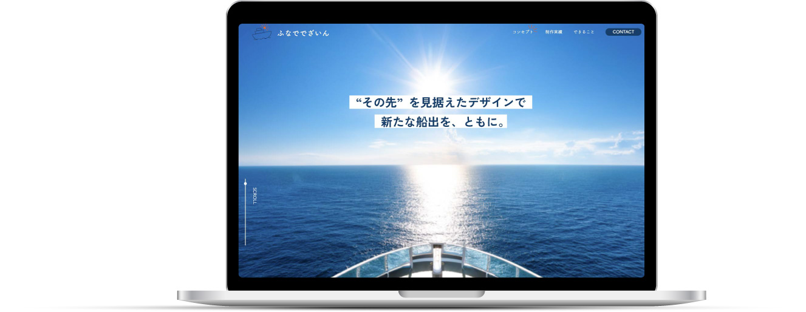
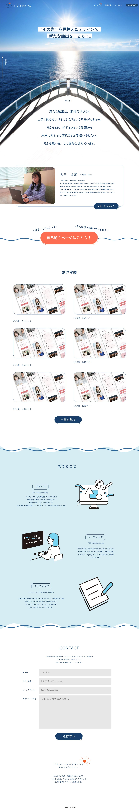
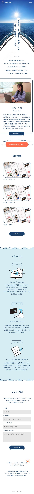

ー作品詳細ー

概要
ポートフォリオサイト
担当内容
デザイン、コーディング
制作期間
2か月(ワイヤーフレーム１週間、デザイン２週間、
コーディング１ヶ月
使用ツール
illustrator、Photoshop
制作費用
-円
制作のポイント
【全体】
私らしさを表現しながらも、この人に頼りたい！と思っていただけるような魅せ方、親しみやすさが伝わるような言葉選びを意識しました。 テーマは屋号の通り『船出』です。グローバルナビゲーションをホバーした時や、トップページ一番下のメッセージ部分など、所々にロゴのモチーフを散りばめて、オリジナリティを出しました。
【『ふなででざいん』に込めた想い】
デザインを必要とするタイミングは、クライアント様が何かを始められるタイミング=つまり船出だと考えます。新たな船出は、期待だけでなく、上手く進んでいけるのかな？という不安もあると思います。そんな時に、”デザインという側面から未来に向かって漕ぎだすお手伝いをしたい。しかし、ただ寄り添うだけでなく、クライアント様が求める結果が出せるデザイナーになりたい。つまりその先を見据えたデザインをしたい”という想いを込めています。
【トップページ】
キャッチコピーは、”想いを形に～”と表現されることも多いですが、私個人の考えとしては、想いを形にするだけでは物足りなく感じてしまいました。”私のデザインを必要として下さった人にとって、その先に繋がるようなデザインをしたい”という想いがあるので、その想いを前面に押し出したキャッチコピーにしました。 私の人柄についても知っていただきたく、自己紹介ページに飛ぶボタンをあえて２つ作り、どちらを押しても自己紹介に飛ぶ(飛んでしまう！)デザインにしました。 諸々のスキルの説明よりも、制作実績を先に表示することで、視覚的にスキルを確認していただけるのではないかと考えました。
【自己紹介ページ】
自己紹介ページを作った理由は、このポートフォリオを見た方に大谷のことを覚えてもらうためです。そのためには自分自身の人間性を伝えることが第一だと考え、大谷の人間性が盛りだくさんのページにしました。 『まじめだけど、どこか遊び心のある人でいたい』と思っているので、色んな表情の写真を用いたり、船に小さく大谷が乗っていたりすることで、ひとつまみの遊び心を表現しています。
ページ下部のボタンに、”大谷のプロフィールをもう一度見る”ボタンを付けました。情報量が多く、１度で大谷のことが分からなくても、ボタンを付けることでもう一度見てもらいやすくなるのではと考えました。しつこいぐらいに、自分のことはアピールしようと思い、このページにおいてはあえて謙虚さを無くしました。
【制作実績・作品詳細ページ】
作品を目立たせるため、シンプルな構成にしました。作品を見て相談したいと思って頂けたら、すぐにお問い合わせに飛べるよう、CONTACTボタンは常に表示されるようにしました。
私らしさを表現しながらも、この人に頼りたい！と思っていただけるような魅せ方、親しみやすさが伝わるような言葉選びを意識しました。 テーマは屋号の通り『船出』です。グローバルナビゲーションをホバーした時や、トップページ一番下のメッセージ部分など、所々にロゴのモチーフを散りばめて、オリジナリティを出しました。
【『ふなででざいん』に込めた想い】
デザインを必要とするタイミングは、クライアント様が何かを始められるタイミング=つまり船出だと考えます。新たな船出は、期待だけでなく、上手く進んでいけるのかな？という不安もあると思います。そんな時に、”デザインという側面から未来に向かって漕ぎだすお手伝いをしたい。しかし、ただ寄り添うだけでなく、クライアント様が求める結果が出せるデザイナーになりたい。つまりその先を見据えたデザインをしたい”という想いを込めています。
【トップページ】
キャッチコピーは、”想いを形に～”と表現されることも多いですが、私個人の考えとしては、想いを形にするだけでは物足りなく感じてしまいました。”私のデザインを必要として下さった人にとって、その先に繋がるようなデザインをしたい”という想いがあるので、その想いを前面に押し出したキャッチコピーにしました。 私の人柄についても知っていただきたく、自己紹介ページに飛ぶボタンをあえて２つ作り、どちらを押しても自己紹介に飛ぶ(飛んでしまう！)デザインにしました。 諸々のスキルの説明よりも、制作実績を先に表示することで、視覚的にスキルを確認していただけるのではないかと考えました。
【自己紹介ページ】
自己紹介ページを作った理由は、このポートフォリオを見た方に大谷のことを覚えてもらうためです。そのためには自分自身の人間性を伝えることが第一だと考え、大谷の人間性が盛りだくさんのページにしました。 『まじめだけど、どこか遊び心のある人でいたい』と思っているので、色んな表情の写真を用いたり、船に小さく大谷が乗っていたりすることで、ひとつまみの遊び心を表現しています。
ページ下部のボタンに、”大谷のプロフィールをもう一度見る”ボタンを付けました。情報量が多く、１度で大谷のことが分からなくても、ボタンを付けることでもう一度見てもらいやすくなるのではと考えました。しつこいぐらいに、自分のことはアピールしようと思い、このページにおいてはあえて謙虚さを無くしました。
【制作実績・作品詳細ページ】
作品を目立たせるため、シンプルな構成にしました。作品を見て相談したいと思って頂けたら、すぐにお問い合わせに飛べるよう、CONTACTボタンは常に表示されるようにしました。
-完成図-

